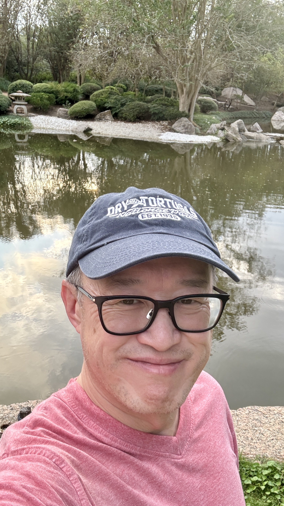

My story
Chi-Chih Woo
I am a data consultant, a mathematician at heart, a teacher, a photographer, and a lifelong lover of classical music. The thread connecting these parts of my life is creativity: I enjoy finding patterns, making complicated things understandable, and sharing the beauty I discover with others.

Beginnings in Taipei
I was born in Taipei, Taiwan, in January 1968. As a child, I was mischievous and more interested in playing with the neighborhood children than in school. I was always drawn to pencil and paper, however. I loved making lines and curves, watching them become shapes, and eventually turning them into elaborate mazes.
When my grades began to slip, my mother hired a mathematics tutor. That tutor recognized an ability in me that I had not yet recognized in myself, and mathematics gradually became one of the great passions of my life.
Music entered my life at about the same time. When I was nine or ten, my father gave me a turntable and a recording of Edvard Grieg's Peer Gynt. I played it constantly. His next gift was Tchaikovsky's Swan Lake Suite, and after that I was hooked.
A new life in America
In 1983, when I was fifteen, my family moved to the United States. Our first home was with my grandparents in Cerritos, near Los Angeles. Everything felt new, and I loved discovering it—especially the food. My grandfather took us exploring on weekends, but adapting to a different country and school system also demanded a great deal from me. I remember reading the English dictionary aloud to teach myself the language.
Drawing moved into the background, while mathematics and music continued to thrive. I listened to the classical station KFAC every day, especially Karl Haas's Adventures in Good Music and the Gas Company Evening Concert. Whenever I heard something that captured my attention, I recorded it on cassette.
Mathematics came easily in school. I took AP Calculus in tenth grade, followed by college courses in discrete mathematics, linear algebra, differential equations, and physics at Cal State LA. I entered UC Berkeley with mathematics already declared as my major and fully intended to earn a doctorate, conduct research, and become a professor. By my second year, I was taking graduate courses with a particular interest in ring theory.
During my third year, I reconsidered that path. My parents were immigrants doing difficult manual work for little income, and I did not want further schooling to add to their financial burden. I chose to begin working after graduation and earned my Bachelor of Arts in Mathematics with high honors.
From mathematics to data systems
My working life began where my heart already was: teaching mathematics privately and at a tutoring center. The work was rewarding, but the income was inconsistent. At a college job fair, I found my first corporate position as an actuarial analyst at Farmers Insurance.
I had expected actuarial work to be almost entirely mathematical. Instead, I found myself crunching numbers with spreadsheets and programming in APL and SAS. To my surprise, I loved it. At Farmers, I learned VBA and developed an automated Excel method for calculating current-level premiums using the parallelogram method. Seeing that solution work beautifully gave me the same satisfaction as solving a mathematical problem: my training in critical thinking had helped me recognize a structure and turn it into a reliable method.
My actuarial career later took me through the Pennsylvania Insurance Department, Ohio Casualty, CSAA, Qestrel, and CSE Insurance. Working in government and private organizations of many sizes broadened my perspective. Along the way, Microsoft Access, event-driven programming, and relational database concepts awakened a lasting interest in database architecture, design, and maintenance.
Keeping mathematics alive
Choosing a corporate career never diminished my love of mathematics. I became a member and major contributor to PlanetMath, an online mathematics encyclopedia whose interconnected entries and open contribution model made advanced knowledge easier to explore. I contributed more than one hundred articles, primarily in mathematical logic, computability theory, order theory and lattices, and category theory. I often wrote about concepts that were difficult to find outside specialized books and, at the time, were not covered even by Wikipedia.
My purpose was simple: mathematics is beautiful, and I wanted to share pieces of that beauty with the world. I also helped administer the community by developing a point system and rules for mathematical entries. That experience led me to learn LaTeX and the fundamentals of HTML, CSS, and JavaScript.
PlanetMath is no longer actively maintained, but I have recovered my contributions and placed them in my own mathematics library. By maintaining the collection myself, I can preserve that work and continue the connected approach to learning that first drew me to the site.
Building a modern reporting pipeline
My transition out of actuarial work began almost by chance. While working at CSE in Walnut Creek, I posted my résumé on Monster.com even though I was not actively looking for a new job. Within a month, Kaiser Permanente called. I had grown restless with repetitive actuarial work and wanted more intellectual stimulation and room to create, so I welcomed the opportunity.
At Kaiser, programming grew from a small fraction of my work to roughly eighty percent of it. During my first five years with Quality and Operations Support in Northern California, I used SAS to produce reports for physicians on subjects including cervical cancer screening and Medicare Star measures. I also built databases for reporting, audits, data entry, and patient outreach. The importance of those systems solidified my love of database work.
I later joined Customer Analytics & Reporting at the encouragement of a former manager. One of my first challenges was a mass-reporting process built on complex queries against enormous transactional tables. Reports could take minutes to query, time out, and require reruns, placing delivery deadlines at risk. I designed and built UTS, an intermediate data mart that precalculated the metrics required by the reports. Queries that had been slow and fragile became almost instantaneous.
Over time, I modernized the full reporting pipeline. I brought report-request intake data into UTS, automated distribution to customer folders in SharePoint with SAS and APIs, and built a SQL-and-Python engine that populated PowerPoint templates and generated the finished reports. The engine replaced most of a Cognos process that regularly took more than two days and reduced the work to under an hour. Today, the pipeline supports roughly 1,500 to 2,000 reports each week across a variety of subjects.
Python was a deliberate choice. Knowing that the organization planned to retire SAS and Cognos, I wanted to prepare an essential process for the future rather than wait for its existing tools to disappear. The result joined the parts of work I value most: foresight, creative problem-solving, and a system that serves people reliably.
Coming full circle through teaching
At the root of my professional life is a love of teaching and sharing knowledge. I enjoy learning, but I enjoy passing on what I have learned even more. My career has therefore come full circle: I began as a mathematics tutor and high-school teacher, and today I mentor colleagues in SAS, Python, SQL, and database design.
Few things are as rewarding as seeing the moment when a student understands a concept. In my present work, that moment has a practical effect as well. Colleagues can apply what they learn to their daily responsibilities, improve their productivity, and find greater satisfaction in their own work.
A creative life
My interest in photography began in the early 1990s, when I moved to Ohio and lived away from my family in California. I bought a camera for fun and began photographing ordinary objects in my apartment—things as simple as salt and pepper shakers. I became fascinated with what a camera could reveal. As I developed a love of travel and road trips, the camera became a constant companion.
When I make a photograph, I look for anything that creates an emotional response: beauty, pattern, memory, or the feeling of discovering a place. I want the finished image to carry some of that emotion to another person. A selection of this work lives in my photography gallery.
I still hope to return to drawing and to the intricate pen-and-pencil mazes I began creating as a child. The same love of lines, forms, and invention continues to shape how I see both art and mathematics.
Classical music remains where I turn for emotional fulfillment. It accompanies exhausting workdays, adventurous road trips, mathematical problems, and quiet evenings. It can cheer me, calm me, bring me joy, or console me. My classical music catalog is another way of sharing something I love and treasure.
Why I created this site
I want this website to show that creativity and beauty can take many forms. They can be heard in music, captured in a photograph, drawn with a pencil, discovered in a mathematical concept, or expressed through a well-designed technical system. This is a place where I can preserve those things, continue exploring them, and share them with anyone who is curious.
Get in touch
If you would like to talk about my work, send me an email.